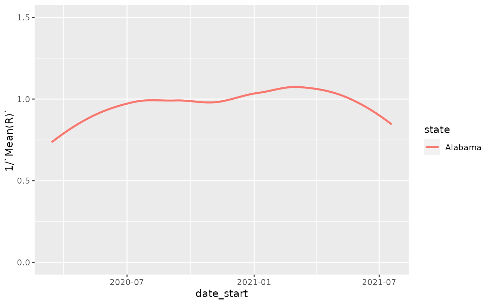

R/estimate_Rt.R
bulk_estimate_Rt.RdThis function can estimate R(t) curves for all locations in a case-tracking dataset and return a stacked data.frame with the location details included. It is a convenience function for getting R(t) over a large dataset. Right now, nothing is done in "parallel", so this function is not going to be much (or any) faster than running on each location in a case-tracking dataset independently and then combining.
bulk_estimate_Rt( df, grouping_columns = setdiff(colnames(df), c(cases_column, date_column)), cases_column = "count", date_column = "date", ... )
| df | a data.frame containing at least a date column and a cases column, describing the cumulative cases at each date. The data.frame may contain additional columns that can be used to "group" the dates and cases to produce a set of R(t) curves. |
|---|---|
| grouping_columns | character() vector specifying the grouping columns that
will break |
| cases_column | character(1) the column in |
| date_column | character(1) the column in |
| ... | passed on to |
A "stacked" data.frame with the outputs from the R(t) estimation process
and associated location information. The actual columns returned for the
R(t) estimate will depend on the estimation_family parameter as well
as other parameters specific to each method.
Other analysis:
estimate_Rt()
Other case-tracking:
align_to_baseline(),
beoutbreakprepared_data(),
combined_us_cases_data(),
coronadatascraper_data(),
covidtracker_data(),
ecdc_data(),
estimate_Rt(),
jhu_data(),
nytimes_county_data(),
owid_data(),
plot_epicurve(),
test_and_trace_data(),
usa_facts_data(),
who_cases()
Sean Davis seandavi@gmail.com
library(dplyr) nyt = nytimes_state_data() %>% dplyr::filter(subset=='confirmed') %>% dplyr::arrange(state,date) head(nyt)#> # A tibble: 6 x 5 #> date state fips count subset #> <date> <chr> <chr> <dbl> <chr> #> 1 2020-03-13 Alabama 00001 6 confirmed #> 2 2020-03-14 Alabama 00001 12 confirmed #> 3 2020-03-15 Alabama 00001 23 confirmed #> 4 2020-03-16 Alabama 00001 29 confirmed #> 5 2020-03-17 Alabama 00001 39 confirmed #> 6 2020-03-18 Alabama 00001 51 confirmed# this may produce warnings, but the processing # will still be correct.... res = bulk_estimate_Rt(head(nyt,500), estimation_family='epiestim',method = 'parametric_si', config = list(mean_si=3.96, std_si=4.75))#> Warning: All elements of `...` must be named. #> Did you want `data = c(date, count)`?#> # A tibble: 6 x 17 #> state fips subset data t_start t_end `Mean(R)` `Std(R)` `Quantile.0.025… #> <chr> <chr> <chr> <list> <dbl> <dbl> <dbl> <dbl> <dbl> #> 1 Alaba… 00001 confir… <tibbl… 2 8 2.44 0.242 1.98 #> 2 Alaba… 00001 confir… <tibbl… 3 9 2.00 0.183 1.66 #> 3 Alaba… 00001 confir… <tibbl… 4 10 1.75 0.150 1.46 #> 4 Alaba… 00001 confir… <tibbl… 5 11 1.81 0.139 1.54 #> 5 Alaba… 00001 confir… <tibbl… 6 12 1.78 0.125 1.55 #> 6 Alaba… 00001 confir… <tibbl… 7 13 2.39 0.130 2.14 #> # … with 8 more variables: Quantile.0.05(R) <dbl>, Quantile.0.25(R) <dbl>, #> # Median(R) <dbl>, Quantile.0.75(R) <dbl>, Quantile.0.95(R) <dbl>, #> # Quantile.0.975(R) <dbl>, date_start <date>, date_end <date>#> [1] "state" "fips" "subset" #> [4] "data" "t_start" "t_end" #> [7] "Mean(R)" "Std(R)" "Quantile.0.025(R)" #> [10] "Quantile.0.05(R)" "Quantile.0.25(R)" "Median(R)" #> [13] "Quantile.0.75(R)" "Quantile.0.95(R)" "Quantile.0.975(R)" #> [16] "date_start" "date_end"library(ggplot2) ggplot(res, aes(x=date_start,y=1/`Mean(R)`,color=state)) + geom_smooth(se=FALSE) + ylim(c(0,1.5))#>#> Warning: Removed 5 rows containing non-finite values (stat_smooth).